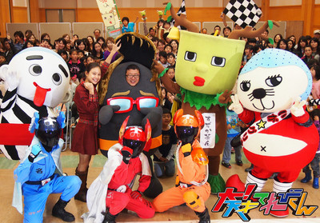
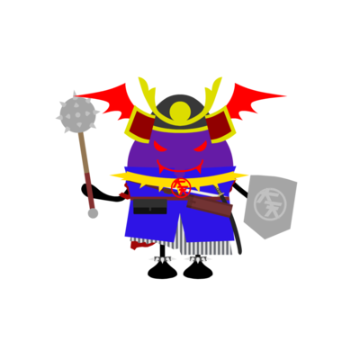
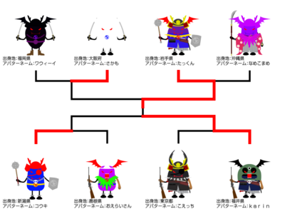
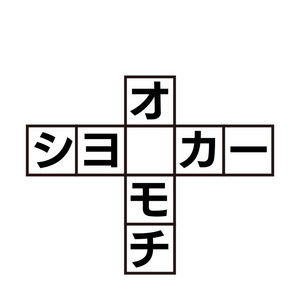
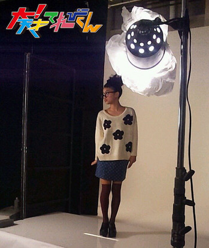
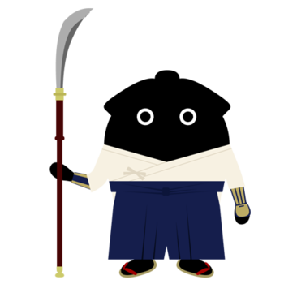
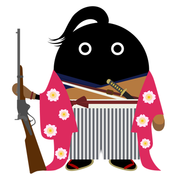

<<2013年9月 | トップページ | 2013年11月>>
2013年10月
【読書の秋２０１３】岡田結実
★読書の秋２０１３★
本じゃなくって、絵本なんですけど、
バムとケロのシリーズ
バムとケロのそらのたびっていうやつで、
たまたま片づけしてたら、この本がでてきて、
ちょっと読んでたら･･･ほかのシリーズもずっと見てしまいました。
これは、ある日家にいたら、バム（犬）のおじいちゃんから手紙がきて、
おじいちゃんの誕生日だから家に来て！みたいなことが書いてあって、
おじいちゃん家に向かうまで大変なことが起きるんです。
虫がうじゃうじゃいるりんごの中に入ってしまったり、色々なことがあるけど、おじいちゃん家につくんですが！！
絵も可愛いし、話もドキドキワクワクするぼうけんの話みたいで、すごくオモシロいです。（絵本だけど。。。）
オススメです。
★倍返ししたいこと★
自分は、バスケが大好きで、このあいだ大人の人とバスケをやったんですが、
背も高くて全ったく勝てなくて、もっともっと上手くなれるよーに、いっぱいバスケを練習して、
いつかめっちゃ上手くなって倍返ししますっ！＾ｖ＾
先に１０点取ったほーが勝つっていうルールだったんですが、
２点しかとれなかったので、倍の倍の倍の倍の倍返ししますっ！
がんばります。
投稿者:岡田結実 | 投稿時間:18時00分 | カテゴリ：We are 大天才テレビジョン | 固定リンク


 " title="ソーシャルブックマークについて">
" title="ソーシャルブックマークについて">
※NHKサイトを離れます。
【読書の秋２０１３】野田真哉
★読書の秋２０１３★
僕は、本が大好きです！
小説も好きだけど、マンガは特に好きです！
その中でも、おすすめなのは「アオハライド」っていうマンガです。
実は、このマンガ、少女マンガなんです。
同じてれび戦士の、陶子さんから教えてもらいました。
読み始めたら、とまらなくなっちゃって、、、ｗ
もう読むたびにキュンキュンしてます！
メチャメチャおすすめなんで、ぜひ読んでください！
★倍返ししたいこと★
僕は小さいころから、ずっとおばあちゃんにお世話になってます。
おばあちゃんは、今も仕事をしています。
仕事をやめた後とかに、生活で不便がないようにしてあげたいです。
なので、お世話になった分、倍返しにして返したいと思います。
投稿者:野田真哉 | 投稿時間:18時00分 | カテゴリ：We are 大天才テレビジョン | 固定リンク
" title="ソーシャルブックマークについて">
※NHKサイトを離れます。
【読書の秋２０１３】中里萌
★読書の秋２０１３★
最近、読んで面白かった本は…
押切もえさんが書いた「浅き夢見し」という本です！！
この本を読んだきっかけは、「人の話を聞け」のゲストが押切もえさんだったからです！！
「読者モデルを夢見る主人公が大変な挫折を何度何度も繰り返し、努力を積み重ねてやっと読者モデルになれる」という内容です！
この本を読んで、私は勇気をもらい、何事にも努力をして取り組みたいと思いました(´∀｀)
皆さんも是非！！
読んでみてくださいっ(o^-^)
★倍返ししたいこと★
「倍返しだ!！」流行ってますよねー
私が「倍返し」したい人は、お母さんです！！
毎日、食事を作ったり…
掃除をしたり…
洗濯したり…
と、毎日すごく大変だと思います。
なのでっ！！
「倍返しだ！！」
いや、それ以上してあげたいと思います。
投稿者:中里萌 | 投稿時間:18時00分 | カテゴリ：We are 大天才テレビジョン | 固定リンク
" title="ソーシャルブックマークについて">
※NHKサイトを離れます。
【押忍！シャイ番長友情の旅】 第１５回 金子の日記
「押忍！シャイ番長友情の旅」１５回目の放送、ご覧いただけましたか？
チーム全員が「金子さん」という、前代未聞の試合、お楽しみいただけましたでしょうか。
試合が行われたのは8月中旬。炎天下の中、、試合に参加してくださった、「金子家」の皆さん、「白沢ベアーズ」の皆さん、本当にありがとうございました！！
マウンドに2回目に上がったとき、実は、シャイ番長の肩には、まだかなりの痛みがありました。
最後のバッターを三振に取り、ノーアウト満塁の大ピンチを0点に抑えた瞬間は、
不覚にも、スタッフはちょっとだけ泣きそうになりました。
サッカー少年で、それまで野球には興味ゼロだったシャイ番長も、
この試合が終わってからは、ときどきテレビで野球の試合を観戦するようになったそうですよ。
山あり谷ありの展開を、シャイ番長の日記でもお楽しみください。
左クリックをすると、原寸大になります。
投稿者:大天才テレビジョン社員１号 | 投稿時間:18時54分 | カテゴリ：お知らせ！ | 固定リンク
" title="ソーシャルブックマークについて">
※NHKサイトを離れます。
【読書の秋２０１３】ソーズビー航洋
★読書の秋２０１３★
４、５カ月くらい前？に見た本です。
ベッキー♪♯ 「ゆめの音色 〜music life〜」 です。
この本を選んだ理由は、僕が、将来ベッキーさんのような存在になりたいからです。
この本は、ベッキーさんの生き方を書いていて、
１つ目。今までのベッキーさんの人生の道のり
２つ目。ベッキーさんが歌っている、歌にこめられた歌詞や曲作りにおけるエピソードについて
３つ目。ベッキーさんが聴いてきて、影響を受けた音楽履歴書
この３つのことが、２０６ページにぎっっっっっしりつまっております。
一番おどろいたのは、ベッキーさんも僕も小学生の時にハーフだからってつっこまれたり、
興味を持ってくれたりと同じエピソードがあったのですが、
ベッキーさんはハーフを「半分」ととらえず「２倍」「ダブル」と考え、
自分がハーフであることを周りになんと言われても、自信満々だし、ほこりにも思っていたのです！！
僕は今、周りになんと言われても何とも思いませんが、
「小さい時、なんでおちこんでたのだろう…。」と思いました。
同じ経験をしているのに僕と真反対に、むしろ「ラッキー」という気持ちでいた人がいて、びっくりしたし、自信もつき、はげみにもなっちゃいました！
このように、僕目線で、同じ考え方で安心する部分もあれば、
自分よりはるかに良い考え方をしていて、おどろかされたり、はげまされたりする部分もありました。
ＤＶＤも付いていて、本で知ったことを、より深く知ることもできるし、本では書いてなかったことを知ることもできるんです！！
ぜひご覧ください！！
★倍返ししたいこと★
今の担任の先生に感謝の気持ちで倍返ししたいです！！
僕の事を理解して下さってサポートもしてくれるんです！！
先生のおかげで学校内でも、いろいろな事にチャレンジできているんです！
将来なにで倍返しできるか分からないです。
だけど、２、３、４、５、６倍返ししたい先生です！！
Ｚｖ−・・・
投稿者:ソーズビー航洋 | 投稿時間:18時00分 | カテゴリ：We are 大天才テレビジョン | 固定リンク
" title="ソーシャルブックマークについて">
※NHKサイトを離れます。
【チャンカワイの大！相撲中継】三重県名張場所
ＮＡＢＡＲＩ！
１０月２５日の「チャンカワイの大！相撲中継」は三重県名張市から。
名張市はチャン錦ちゃんの“中の人”チャンカワイさんの地元でしたが、結果は…

１回戦は四日市市のこにゅうどうくんに勝ったものの、
決勝では鈴鹿市からやってきたお茶の木界の異端児、「すずか茶ん」に
惜しくも敗戦。故郷に錦を中途半端に飾る結果になってしまいました。

これは三重県名張場所、終了後の一幕。
キャラクターたち勢揃い。
投稿者:大天才テレビジョン社員３号 | 投稿時間:18時00分 | カテゴリ：大！木曜LIVE | 固定リンク
" title="ソーシャルブックマークについて">
※NHKサイトを離れます。
【読書の秋２０１３】中尾美晴
★読書の秋２０１３★
美晴のおすすめの本は、魔法の世界を描いた有名なハリーポッターシリーズ！
みんなは、映画やテレビでもう見たかな？
でもぜひ、本で読んで見て下さい！
めっちゃ読みごたえあるし、魔法の世界を自分で想像するのは楽しい☆☆
ハリーポッターは魔法使いの男の子。
ホグワーツ魔法学校で魔法を勉強しながら成長していく話。
自分の両親や多くの仲間を殺したヴォルデモートを倒すために仲間と戦うよ。
このヴォルデモートが、めっちゃ悪い！！
悪すぎて、なかなか倒せない。
だからドキドキハラハラ、読みだすと止まらない！
でも戦いばかりじゃないよ。不思議で面白い魔法の世界を楽しめるよ☆
何度読み返しても面白い。
ハリーポッターシリーズ！是非読んでね！
★倍返ししたいこと★
美晴は、うらみの倍返しはあらへんので、お礼の倍返しかな！
お礼言いたい人は沢山おるけど…。
でも、今こうして大天ブログを書いて、てれび戦士になれたきっかけをつくってくれはった「大阪のマネージャー」かな！！
どんな仕事も美晴ちゃんなら大丈夫って、いつもはげましてくれはった。
美晴のキャラをいつもほめてくれる。
てれび戦士になれた時も、交差点で沢山人おるのに大声出して喜んだって。
これからも仕事がんばって、予想以上の活動をしてお礼したいです！
「倍返しで！」
投稿者:中尾美晴 | 投稿時間:18時00分 | カテゴリ：We are 大天才テレビジョン | 固定リンク
" title="ソーシャルブックマークについて">
※NHKサイトを離れます。
最強アバターを決める「アバタイセン」〜第7戦〜
地上最強のアバターを決める超大型企画「アバタイセン」。今回は第7戦。
大天才テレビジョン内部にあるコンピューターが自動対戦した結果、
全世界に存在する全23839体のアバターの頂点に立ったのは…
岩手県 たっくんさん

おめでとう！
ベスト８の対戦結果はこちらです（左クリックで拡大します）。

アバターの強さは、『パーツ』や『色』の組み合わせで変わります！
番組HPにあるトレーニングセンターで自分のアバターと、てれび戦士や出川特命Pの
アバターと対決させて、最強アバターになる組み合わせを見つけてほしい！
君も最強のアバターを作って対戦の時を待て！
アバターの制作はこちらから！
投稿者:大天才テレビジョン社員１号 | 投稿時間:19時00分 | カテゴリ：大！木曜LIVE | 固定リンク
" title="ソーシャルブックマークについて">
※NHKサイトを離れます。
【読書の秋２０１３】竹原司
★読書の秋２０１３★
こんにちは！司です。
ぼくが最近読んだ本で、おもしろかった本は「終わりのセラフ」という本です。
「終わりのセラフ」は、マンガで、その小説版が、この本です。
この本のストーリーは、世界が滅亡し、
地上が吸血鬼に支配される直前の最後の春に、
主人公の一瀬グレン１５才が入学した呪術師学校で、胸に大きな野心を抱きながらも、
弱いと嘲られながら過ごすなかで起きる戦争や事件で、
主人公はどうするかという本です。
おもしろいので、ぜひ読んでみてください。
★倍返ししたいこと★
この前、学校で５０ｍのタイムをはかったとき
ぼくは足がおそいので、友達に「おそいね！」と笑われた時に「倍返しだ！」と言って、
その後あった、ぜんくつの長さをはかるしゅもくで、ぼくは体がやわらかいから、
男子の中で一番になって、おそいと言った友達に
「倍返し成功！」とドヤ顔で言ったら「くっそ〜」とくやしがっていました。
倍返し成功した司でした！
投稿者:竹原司 | 投稿時間:18時00分 | カテゴリ：We are 大天才テレビジョン | 固定リンク
" title="ソーシャルブックマークについて">
※NHKサイトを離れます。
【読書の秋２０１３】山田陶子
★読書の秋２０１３★
読書の秋でつね。
今秋、９冊目に入ってる私です((+_+))
どれも面白いんですけどね。
「SPEC」ですかね。
あれは、ドラマ観たのが最初ですね。
(笑)ポイントが、セリフや映像に沢山散りばめられていて、複雑です。
SPECとは、人間の持つ特殊能力のことで（時を止めるSPEC・未来を読むSPEC等々）
SPECを持つ犯罪者を、当麻砂綾（とうまさや）と、瀬文焚流（せぶみたける）が戦い取り締まる話です。
私的には、小説は、ドラマより「高まる〜」←主人公、当麻砂綾の口癖です(^。^)y-.。o○。
自分の想像も広がるし、内容が明確に頭に入ります。
ワクワクしますよ。お勧めでつ。
★倍返ししたいこと★
蚊が嫌いです(-_-メ)
私、めっちゃ刺されます。
秋の蚊は、生命力強くて、刺されるとかなりかゆい！
蚊って、蚊に刺されないですよね。
お返しできないっつーね(-_-;)。
よって・・・・
シューーーーーーーーー。
倍返しだ！！
ごめんなさい・・・。
投稿者:山田陶子 | 投稿時間:18時00分 | カテゴリ：We are 大天才テレビジョン | 固定リンク
" title="ソーシャルブックマークについて">
※NHKサイトを離れます。
【大！ブレイン】小道具クロスワードパズル出題と解答
きょう放送の「大！ブレイン〜」２回目はご覧になって頂けましたか？
てれび戦士が番組で挑戦した「小道具クロスワードパズル」は以下の5個。
空欄にアイテムを1つ当てはめて、ことばを完成させよう。
アイテムはタテとヨコで違う読み方をします。
アイテム

1.

2.
3.
4.
5.
【答え】
1. カネ／ベル （タテ：オカネモチ ヨコ：ショベルカー）
2. メシ／コメ （タテ：ダルメシアン ヨコ：ラブコメディ）
3. カギ／キー （タテ：アイカギ ヨコ：スキージョウ）
4. クマ／ベア （タテ：バクマツ ヨコ：タベアルキ）
5. カネ／コウカ （タテ：タカネノハナ ヨコ：リョコウカバン）
「ファイ・ブレイン 神のパズル」の放送は
Ｅテレ毎週（日）後5:30
投稿者:大天才テレビジョン社員３号 | 投稿時間:18時54分 | カテゴリ：お知らせ！ | 固定リンク
" title="ソーシャルブックマークについて">
※NHKサイトを離れます。
【読書の秋２０１３】延命杏咲実
★読書の秋２０１３★
こんにちは。
マンガは、あまり読まない延命です。
私がおすすめする小説は「トキメキ図書館」シリーズです。
この本は4かんまでありますが、2かんまでしか持っていません。
あと2かんほしいです。
新しい町に引っこししてきた主人公のもえが、転入した学校のステキな図書館を中心に出来事が起こる物語です。
みなさんも、ぜひ読んでください！
どんな出来事が起きるかは、読んでからのお楽しみですよ☆
★倍返ししたいこと★
私は、よくお父さんや、お母さんにおねだりをして物を買ってもらっています。
だから、いつもふたんをかけていると思うので、
大きくなったら、いっしょうけんめいお仕事をしてお金をかせいで、
そのお金でプレゼントを倍返ししてみせます！
投稿者:延命杏咲実 | 投稿時間:18時00分 | カテゴリ：We are 大天才テレビジョン | 固定リンク
" title="ソーシャルブックマークについて">
※NHKサイトを離れます。
【大！ブレイン】とんちパズル出題と解答
きょう放送の「ヒット番組への道 〜大！ブレイン〜」ご覧になって頂けましたか？
パズルで戦うアニメ「ファイ・ブレイン 神のパズル」とのコラボレーション企画でした。
てれび戦士が番組で挑戦した「とんちパズル」は以下の４つ。
図が一体何を表しているのか、ことばを答えよう。
みなさんも、とんちをきかせて考えてみてください。
1.

2.
3.

4.

【答え】
@ タイトルマッチ （鯛取るマッチ）
A バスガイド （バスが井戸）
B イタリア （板リア 板に逆さまの“アリ”）
C レトルト食品 （“レ”取ると食品 「食」のレが取れている）
「ファイ・ブレイン 神のパズル」の放送は
Ｅテレ毎週（日）後5:30
投稿者:大天才テレビジョン社員３号 | 投稿時間:18時54分 | カテゴリ：お知らせ！ | 固定リンク
" title="ソーシャルブックマークについて">
※NHKサイトを離れます。
【押忍！シャイ番長友情の旅】 第１４回 金子の日記
「押忍！シャイ番長友情の旅」１４回目の放送、ご覧いただけましたか？
「試合前日の夕方までメンバーが揃わないなんて、野球の試合をするのは無理か…。」と
スタッフ一同（もちろん、シャイ番長も）正直あきらめていました。せっかく集めたお友達に、何と言ってお詫びをしようかな、と考えていた、そのとき！
何気ない会話の中から、太陽くんが、お父さんと野球をやることがあると判明！
さらに、
「太陽くんのお父さんは、次の日からお盆休みで、たまたま予定が空いていた」
「太陽くんのお父さんは、少年野球チームのコーチをやっていて、試合に興味津々だった」
と思わぬ幸運が重なって、
試合前日の夜7時に、ギリギリ計8人のチームメイトをそろえることができました！
シャイ番長、なんたる強運！！
ふだん口数が少なく、テンションがあがることがほとんどないシャイ番長も、このときばかりは、めずらしく興奮気味でした！
（太陽くんのお父さんはじめ、友達になってくださった皆さん、本当にどうもありがとうございました！！）
さて、来週は、いよいよ野球の試合！
野球ド素人のシャイ番長の奮闘ぶりを、いつもより少し時間を拡大してお届けします。
お楽しみに！
山あり谷ありの展開を、シャイ番長の日記でもお楽しみください。
左クリックをすると、原寸大になります。
投稿者:大天才テレビジョン社員１号 | 投稿時間:18時54分 | カテゴリ：お知らせ！ | 固定リンク
" title="ソーシャルブックマークについて">
※NHKサイトを離れます。
【読書の秋２０１３】島田太一
★読書の秋２０１３★
最近読んだ本は、「２５の小さなおはなし」という本です。
それは、「かばん」「風」「かさ」「手紙」「窓」「時計」の６つのくくりに分かれて、短い２５個のお話がはいってる本です。
その中で、一番印象深かった話は「窓売り」っていう題名です。
一人で留守番をしている男の子が、窓売りのおじさんに声をかけられました。
売っている窓は、今、望んでいる物が買った窓の外に表れるといわれて、おこづかいの１０円を出しました。
買った窓は素敵な人と出会えるという窓。
おじさんが去っていくと、家にパパとママが帰ってきた、というお話です。
えっと、この話は面白いというよりは、心がほっこりするようなお話ですね。
男の子は、とてもパパとママが好きなんですね。
そして、なるほど、とも思いました。
はい、この本は色々なジャンルのお話が詰まっています。
皆さんも、この秋は読書の秋にしてみてはいかがですか。
m(‐‐)m
★倍返ししたいこと★
小学校の低学年の時にお母さんと歩いてて､千円札が落ちてたんです。
その持ち主が周りにいるかどうか聞いたんですが、いないんです。
なので、交番に届けました。
そして、半年経って、落とし主の人がいなかったので、警察の方から連絡があって自分のお金になりました。
0からの1000倍返しです。
まぁ、色々考えて募金に出しました。
でも、帰る途中にハンカチを落としてしまって、15, 6ぐらい損しました。
はい、でも、その1000円でちょっとでも幸せになる人がいたらいいな…(´∞`※) οき
投稿者:島田太一 | 投稿時間:18時00分 | カテゴリ：We are 大天才テレビジョン | 固定リンク
" title="ソーシャルブックマークについて">
※NHKサイトを離れます。
【２０２０年の私】黒澤美澪奈
★２０２０年の私★
みれなで〜す(^o^)／
２０２０年、今から７年後、みれなは19才です！
１０代最後の年なんですね…笑。どうなってるかな？
みれなは、小さい頃、泳ぐのが大好きで、
オリンピックの選手になりたいな〜、なんて夢を抱いて練習していた時がありました。
実際に、毎日練習していたプールから、オリンピックの選手が誕生してたんですよ！
でも、みれなは途中で違う夢を見つけてしまって、今は、新しい夢に向かって
頑張っています！
７年後、みれなは大学生になっているかな？
そして、今の夢を変わらずに追い続けているかな？
みれなには、オリンピックを目指して毎日頑張って練習している友達がいるので、
その子たちを会場で、全力で応援したいです
そして、みれなは・・・
メダリストの活躍をリポートできる人になっていたいです〜☆
★最近、見た夢★
最近みた夢、そうですね〜
皆さんは、ダイオウイカって知ってますか？
深海に住んでいる、巨大なイカの仲間なんですけど。
ある日みれなが、海を泳いでたら…
なぜか、その超巨大化したダイオウイカが襲ってきて、
海の中でバトルした夢を見ました…笑
実は、夏休みの自由研究で、深海生物について調べたんですけど、
たくさんの深海生物の本や映像を見たり、深海展を見に行ったりしたからかな
ダイオウイカとのバトルの結果は、皆さんのご想像におまかせしますね。
投稿者:黒澤美澪奈 | 投稿時間:18時00分 | カテゴリ：We are 大天才テレビジョン | 固定リンク
" title="ソーシャルブックマークについて">
※NHKサイトを離れます。
【２０２０年の私】岡田結実
★２０２０年の私★
んー。
前までは、将来の夢は女優さんでしたが、今は、モデルさんになりたいです！
いや、なってる？！笑。
モデルさんもやりつつ、たまにドラマとかにも出てみたいです。^o^
そのためにも、がんばります。応援よろしくおねがいします☆
東京オリンピックかー。
自分は、友達とお店とかで、ドンチャンさわぎしてそう・・・笑
ずびーとか、友達とか、笑。
ちょっぴり楽しみ♪♪
自分の友達が、もしかしたらオリンピック出てるかもだから、今のクラスのみんなで応援してるかもですね。
めっちゃ、友達が出てたらうれしいです^▽^
早く大人になりたいけど、なりたくないですねー｡(>〜<)。
夢に向かってがんばります。

★最近、見た夢★
小学校の頃、好きだった子の夢見ましたねー☆
なんか、小学校の頃に戻ってて、教室で先生が授業してる時に、
自分が好きな子を見たら、好きな子も見てて目が合って、目をそらそうと思ったら、
その子がいきなり、あっかんべーってしてきて、自分もやりかえしてて、
あとアイコンタクトとかしてて、もぉラブラブでしたね〃〃☆
でも夢がさめたあとは、もぉ、悲しかったです(>〜<)
6年生の頃、その子と本当に授業中やったりしてましたよ！
アイコンタクトとか〃〃。キャー☆
だから最近は、いい夢だらけ☆自分のういういしい時☆
投稿者:岡田結実 | 投稿時間:18時00分 | カテゴリ：We are 大天才テレビジョン | 固定リンク
" title="ソーシャルブックマークについて">
※NHKサイトを離れます。
【２０２０年の私】野田真哉
★２０２０年の私★
僕は2020年、日本代表でサッカーをしてます。
2018年、18歳でJリーグデビュー、
2020年にオリンピックで活やくして、海外いせき決定って感じですかね。
ともかく2020年にオリンピックに出れるように、サッカーの練習頑張ります！！！
オリンピック出れたらいいな､､､
★最近、見た夢★
空を飛んでました。
ただそれだけでした。
でも、風をあびて飛んでたような気がします。
朝おきたら、風の正体がわかりました。
窓開けっ放し､､､で寝てました。ｗｗ
その翌日、かぜをひきました､､､
投稿者:野田真哉 | 投稿時間:18時00分 | カテゴリ：We are 大天才テレビジョン | 固定リンク
" title="ソーシャルブックマークについて">
※NHKサイトを離れます。
【２０２０年の私】中里萌
★２０２０年の私★
私の7年後・・・
想像がつきません(笑)
7年後は、天才てれびくんに出たことを生かし、まだ芸能界にいたら、うれしいです！！(*^▽^*)
でも、パティシエにもなれていたら(◎∀◎*)〃〃ウフッ
最高ですう！！
7年後のオリンピックは、会場で見ていたいです！！
こんな珍しい機会、多分ないと思うから、ぜったいに！！会場で！！生で！！見たいです´∀｀
★最近、見た夢★
たしか4、5ヶ月ぐらい前に見た夢だった気がします。
今だに、ハッキリと覚えている夢があります！！
「ハロウィンの日、私と友達は、公園で2人だけで鬼ごっこをやっていました。
私が逃げる側で､､､
つかまりそうになった時は、カラスになって、空を飛んで逃げてました(笑)
カラスになったり、戻ったりと…」
こ〜んな夢を、ず〜っと覚えています！！
なぜ、ハロウィン、カラスなのでしょうか。
自分でも、よく分かりません(笑)(笑)
投稿者:中里萌 | 投稿時間:18時00分 | カテゴリ：We are 大天才テレビジョン | 固定リンク
" title="ソーシャルブックマークについて">
※NHKサイトを離れます。
【押忍！シャイ番長友情の旅】 第１３回 金子の日記
「押忍！シャイ番長友情の旅」１３回目の放送、ご覧いただけましたか？
今回の友達ターゲットは「金子さん」。
群馬県沼田市利根町にある大楊地区という集落は、住民のおよそ７割が、「金子」さんという珍しい地域。
どこもかしこも金子さんばかりなので、「金子さーん！」と呼ぶと、
みんな振り向いてしまう、という珍光景を、ロケ中に何度も目にしました！
シャイ番長は、余裕しゃくしゃくで友達探しを始めたものの、シャイ番長のロケはぶっつけ本番。そんなに甘くはありませんでした…。
試合の日は予定がある、と、会う人会う人に断られます。
しかも、ロケをしたのは8月中旬の猛暑日。日中の気温は、なんと36度を超えていました…！
ちょっと歩くだけで、汗だらだら、喉はカラカラ。
次第に、シャイ番長の心は、折れていきました…。
山あり谷ありの展開を、シャイ番長の日記でもお楽しみください。
左クリックをすると、原寸大になります。

投稿者:大天才テレビジョン社員１号 | 投稿時間:18時54分 | カテゴリ：お知らせ！ | 固定リンク
" title="ソーシャルブックマークについて">
※NHKサイトを離れます。
【２０２０年の私】竹原司
★２０２０年の私★
こんにちは！司です！！
7年後の自分は19才なので、たぶん大学一年生で、
バイトや勉強や遊びなど、いろいろなことをやっていると思います。
7年後は、やせていて、イケメンでいてほしいです。
東京オリンピックは、たぶん必死でチケットを買って、スタジアムで見てると思います。
7年後の自分に期待してる、司でした！
★最近、見た夢★
最近みた夢は
「進撃の巨人」というマンガを見たその日に、すごくこわい夢をみました。
その夢の内ようは、僕が巨人に追われて、食べられそうになる夢です。
すごくこわくて、「死ぬ〜」と言いながら起きました。
もう、二度と夢は見たくないと思いました。

投稿者:竹原司 | 投稿時間:18時00分 | カテゴリ：We are 大天才テレビジョン | 固定リンク
" title="ソーシャルブックマークについて">
※NHKサイトを離れます。
「八重の桜」アバターパーツ！！第２弾
きょう１０月１３日（日）の大河ドラマ「八重の桜」のデータ放送で、アバターのコラボパーツ第２弾を獲得するためのパスワードが発表されます。それでは、今回ゲットできるパーツを紹介しましょう。
八重の桜「なぎなた」バージョン

なぎなたは、会津では江戸時代から武家の女子の重要なたしなみでした。
八重は、運動神経が良かったため銃だけでなくこのなぎなたの腕も高かったと言われています。
ライバルは、会津戦争のさなかに城下で討ち死にした中野竹子（『八重の桜』では、黒木メイサさんが演じました。）で、
その腕に八重も一目をおいていたと言われています。
八重の桜「ポスター」バージョン

八重が羽織っている桃色の打掛は、ポスターデザインを手がけた広告デザイナー・成田久さんが制作したオリジナルの着物です。
江戸時代はこういった打掛は、お姫様以外は来ませんでしたので、
普通の武士の娘である八重は劇中でこの打掛を着ることはありませんでした。
ちなみに、この打掛の本物は２０１４年のお正月まで会津若松市の鶴ヶ城の近くにある「大河ドラマ館」で展示されています。
ビビッドな色調と精悍なシルエットが展覧会を訪れる外国人観光客の間で「Cool!」と大好評を博しているそうです。
パーツの獲得方法

☆「八重の桜」の放送中、データ放送の「ことば解説」のなかでパスワードを１文字ずつ発表します。
☆パスワードすべての文字をメモして、「大！天才てれびくん」のアバターメイカーのページへ。
☆パーツ選択画面で「桜」のマークが出ているものが「八重の桜」パーツです。

☆出てきた入力画面にパスワードを入れれば獲得完了です！
※「八重の桜」パーツは一体につき複数個あります（たとえば着物、わらじ、銃…のように）。上のようなアバターを作るにはすべてのパーツを獲得する必要があります。
投稿者:大天才テレビジョン社員１号 | 投稿時間:10時00分 | カテゴリ：お知らせ！ | 固定リンク
" title="ソーシャルブックマークについて">
※NHKサイトを離れます。
【２０２０年の私】長谷川ニイナ
★２０２０年の私★
7年後の私はちょうど二十歳です！
二十歳にオリンピックなんて、大人になったことをお祝いされてるみたいで嬉しいです!!
記念にもなりますしね☆゛
将来の夢は女優なので、二十歳には色々な役を演じられて、存在感のある女優になっていたいです。
あと二十歳といえば「大学生」ですね！
大学生って色々な事ができて楽しそうだなぁって思います♪
気になるのは、やっぱり身長かな？？
今161cmなんですけど、あと何cmくらい伸びるんだろうなあって思います！！
東京オリンピックの開会式の時はスタジアムで実際に見てみたいです！！
今から楽しみです！ワクワク〜〜！！
★最近、見た夢★
この間、おかしな夢を見ました！アッキーにお説教されるという夢です！
大喜利かなにかの流れで、私が「世界が滅亡する!」って言ったんです。さらっと。
そしたら、いつもやさしくて面白いアッキーが突然、
「そんな事言ってはいけない!」と私を叱り、そのまま正座をし、ずっとお説教タイムでした。
しかも、お説教されている時、みんなそれを見ていて…。恥ずかしかったです(汗)
なんでアッキーのお説教の夢だったんだろ…。
投稿者:長谷川ニイナ | 投稿時間:18時00分 | カテゴリ：We are 大天才テレビジョン | 固定リンク
" title="ソーシャルブックマークについて">
※NHKサイトを離れます。
最強アバターを決める「アバタイセン」〜第6戦〜
地上最強のアバターを決める超大型企画「アバタイセン」。今回は第6戦。
大天才テレビジョン内部にあるコンピューターが自動対戦した結果、
全世界に存在する全23307体のアバターの頂点に立ったのは…
島根県 おえらいさんさん

おめでとう！
ベスト８の対戦結果はこちらです（左クリックで拡大します）。

アバターの強さは、『パーツ』や『色』の組み合わせで変わります！
番組HPにあるトレーニングセンターで自分のアバターと、てれび戦士や出川特命Pの
アバターと対決させて、最強アバターになる組み合わせを見つけてほしい！
君も最強のアバターを作って対戦の時を待て！
アバターの制作はこちらから！
投稿者:大天才テレビジョン社員１号 | 投稿時間:18時54分 | カテゴリ：大！木曜LIVE | 固定リンク
" title="ソーシャルブックマークについて">
※NHKサイトを離れます。
【２０２０年の私】金子隼也
★２０２０年の私★
こんにちは(^O^)隼也です。
僕の7年後は、陸上の選手としてオリンピックに出場したいです。
今はあまり部活に参加できていないのですが、これから頑張って短距離の選手で出場したいです。
そのためにも、今から努力して頑張りたいです。
メッキはサッカー選手かな？
★最近、見た夢★
あんまり夢は見ないのですが…
1番記憶に残っている夢は、エベレストの頂上からスキーをして雪崩に巻き込まれた夢です。
起きた時は、現実じゃなくて良かった〜と思いました。
エベレストは無理かもしれないけど世界遺産になった富士山には登ってみたいです。
投稿者:金子隼也 | 投稿時間:18時00分 | カテゴリ：We are 大天才テレビジョン | 固定リンク
" title="ソーシャルブックマークについて">
※NHKサイトを離れます。
【２０２０年の私】中尾美晴
★２０２０年の私★
7年後、美晴は19さいだ〜☆☆
20さいまで、あと少しか。
できれば、今の夢である「文武両道」を実現していて、大学に通いながら、お仕事続けていたいなあ☆☆
☆関西の有名な大学に通っていて、その大学の学生でオリンピックに出る選手のドキュメンタリーとかを担当したいです！
または、美晴が水泳選手だった頃のチームメイトがオリンピックに出場してるかもしれないから、チームメイトと入江選手の新旧対決の実況をしたいです。
オリンピックの実況アナウンサーを実現できるよう、勉強も仕事もがんばります！
★最近、見た夢★
美晴は熟睡しすぎて夢を見ない。
見るとしたら、こんなパターン。
1 重い〜苦しい〜息ができない〜もうだめだ〜
ガバって起きると、ポチェナが美晴を枕にして寝ていた。
（ポチエナ？→8月22日の大天ブログで紹介しているよ）
2 寒いよ〜寒いよ〜こごえるよ〜
ガバって起きると、ポチエナが美晴の布団をうばいとっていた
3 美晴を誰かが呼んでいる。はげまし？応援？ん〜？？怒っている？
「美晴はよ起きや」お母さんの声だった。
投稿者:中尾美晴 | 投稿時間:18時00分 | カテゴリ：We are 大天才テレビジョン | 固定リンク
" title="ソーシャルブックマークについて">
※NHKサイトを離れます。
【２０２０年の私】島田太一
★２０２０年の私★
7年後は、今、僕は12才なので、19才ですね。
19才は学生になっていると思います。たぶん、あれば卓球部に所属したいです。
そして、僕は早生まれなので、同級生のお友達の成人式を祝ってるかんじですかね。
ほんで、バイトもしてたいです。
周りに色んなアルバイトを見かけるので、どれにしようか迷いたいです。
そして、オリンピックですね。
オリンピックはテレビで見る感じですね。サッカーの試合を特に見たいです。
金メダルを世界で一番、日本が日本の場所でとれるように頑張ってほしいです。

★最近、見た夢★
どうしてそうなったのか、わかんないんですけど、学校の友達とか、てれび戦士とかが、前、通学してた小学校のろうかにいるんです。
で、4、50cmくらい水があるんです。
自分が一番前のはじっこにいたんです。
で、前に、めちゃでかいおたまじゃくしがいて、
自分はあおむけで水に浮いて、足でおたまじゃくしをけって後ろに進んで、なにかと思ったら、そのおたまじゃくしから逃げるみたいなやつだったんです。
で、逆のはじっこについたと思ったら、急に、パッって表れてるんです。それを何回かくり返してたんです。
そんで、ずびぃと結実が理科室に避難したという所で起きました。
という、よくわかんない夢を見ました。
投稿者:島田太一 | 投稿時間:18時00分 | カテゴリ：We are 大天才テレビジョン | 固定リンク
" title="ソーシャルブックマークについて">
※NHKサイトを離れます。
【２０２０年の私】山田陶子
★２０２０年の私★
はい！
7年後は、オリンピックですね。
待ってました♪
東京オリンピック♪
よっ！＼(-o-)／♪
ずっとずっと、招致されると思ってました。
何見ようかな〜(^。^)y-.。o○
高校で沢山勉強し〜の〜☆
東京の大学に入り〜の〜☆
女子大生し〜の〜☆
ボランティアし〜の〜☆
オリンピックの会場に入り〜の〜☆
観〜の〜☆
応援し〜の〜☆
的な(^_-)-☆
ちゃんちゃん☆
トゥーコ
★最近、見た夢★
真っ白で、何にもない、真四角の部屋・・・・。
真っ白な全身タイツに、白塗りの陶子が・・・。
真っ白な部屋の真ん中に、真っ白な座布団に正座していた・・・。
そして、そのまま、何時間も経過・・・。
数時間後、やっと、妙な恐怖感が・・・。
徐々に、真っ白な汗が垂れる・・・。
真っ白な汗が、床に・・・。
ボタン・・・。
朝・・・。
夢だった・・・。
そして、起きた時は、汗ひとつかいてなかった・・・。
怖〜い・・・(；一_一)

投稿者:山田陶子 | 投稿時間:18時00分 | カテゴリ：We are 大天才テレビジョン | 固定リンク
" title="ソーシャルブックマークについて">
※NHKサイトを離れます。
【２０２０年の私】相澤侑我
★２０２０年の私★
2020年、僕は17歳になってます！
完全に選手として出場できる年齢ですよね*\(^o^)/*
でも、残念ながらアスリートにはなれそうもないので、日本チームの応援に行きたいと思っています!!!!!!
ぜひ観戦したいのは、体操とボクシング！
内村航平選手LOVE(^o^)
あと、今度「人の話を聞け」で登場する、ボクシングの村田諒太選手も応援したいです！
他にも会いたい選手はたくさんいるので、是非是非、観戦に行きたいです!!!
がんばれ日本!!!
★最近、見た夢★
先生が、ボォ???ッてお湯が吹き出る温泉に10分ぐらい入ってて、上がって体重計ってみたら、先生の体重が30kgも減ってて、先生がガリガリになっててびっくりしました(ｰ ｰ;)
そこでなんか体重計が爆発して………
そっからはあんまり覚えてないんですけど、そんなに遠くないのに急いで新幹線で帰った記憶があります(^_^)
これからもっと不思議な夢を見て、人生楽しみたいと思います笑笑！
投稿者:相澤侑我 | 投稿時間:18時00分 | カテゴリ：We are 大天才テレビジョン | 固定リンク
" title="ソーシャルブックマークについて">
※NHKサイトを離れます。
【２０２０年の私 】延命杏咲実
★２０２０年の私 ★
運動オンチな延命です。
7年後は高校2年生です。たぶん、7年後も運動オンチでしょう。
なので、オリンピックの選手には、ぜったいなってないと思います!
私は、運動ではなく、勉強をがんばりたいです!
でも、オリンピックの、せい火ランナーはやってみたいなぁ…
★最近、見た夢★
最近、私はズッさんと手をつないで、家の近くの大きな公園で、デートしている夢を見ました(笑)
朝起きて、その夢を思い出して笑い転げました!
あっ、もちろん現実ではなく、夢ですよ!
投稿者:延命杏咲実 | 投稿時間:18時00分 | カテゴリ：We are 大天才テレビジョン | 固定リンク
" title="ソーシャルブックマークについて">
※NHKサイトを離れます。
【２０２０年の私】ソーズビー航洋
★２０２０年の私 ★
20年ですね…。
1人ぐらしをしていて、彼女ができていてほしいです(笑)
あまりモテないんで（爆笑）
1人ぐらし場所は、渋谷がいいな〜。なんか渋谷おちつくんで!！
サングラスかけて運転していたいです!！オシャレでパッとしている人がいいですね。
あと、ちょうど20歳なので、お酒も飲めていたいです!！
赤ワインは「美」と「健康」に良いらしいんで、けっこう興味があるんで、チャレンジしたいです!！
あとオリンピックを見に、出身のオレゴンから家族や親戚が来ると思うので、一緒に会場に応援しに行きたいです。
競技は、「フィギュアスケート」!！あの音楽にのって、氷の上で舞う姿は、ＴＶでも夢中になります!！だから生で見たいです。
★最近、見た夢★
スパイダーマンのように、ビルにくっついて、飛んで、くっついて、落ちていって地面に付くしゅんかんに、びょーん!！って飛んで。の、くり返しをしている夢を見ました。
すんっごく気持ち良かったです。
空気が、かみの毛になびいて、思うだけで、飛んでくっついて、落ちて…。のくり返し!！
本当にうまく言い表しづらいんですけど、気持ち良くて楽しくて、何の悩みもストレスも感じない夢を見ました。
起きた時の残念な気持ちは、3日ほど消えませんでした。
また見たいです!！
Zv---◎
投稿者:ソーズビー航洋 | 投稿時間:18時00分 | カテゴリ：We are 大天才テレビジョン | 固定リンク
" title="ソーシャルブックマークについて">
※NHKサイトを離れます。
【自分を動物にたとえるなら】野田真哉
★自分を動物にたとえるなら★
動物か〜､､、
マグロですかねｗｗ
いやーうるさいし、つねにうごきまくってるんでｗｗ
でも、よくかんがえるとよくわかんないんですよね､､
ある意味なまけものだし､､、
みなさんぼくなんの動物だと思いますか？
一回自分がなんの動物か、かんがえてみるのもおもしろいですよ！
★最近、勇気をふりしぼったこと★
言うのもちょっとはずかしいんですけど､､､
この前少女マンガ買ったんです。
近くにいた女の子に変な目で見られました。。。
店員さんにも「え､､､」って顔でみられました。
かいづらかったんですけど、今はふつーにかってますｗｗ
投稿者:野田真哉 | 投稿時間:18時00分 | カテゴリ：We are 大天才テレビジョン | 固定リンク
" title="ソーシャルブックマークについて">
※NHKサイトを離れます。
【ぐらぐらブロックタワー】衣がえしました
全国１億５千万人の「ぐらぐらブロックタワー」ファンのみなさま。
暑い暑いと思っていたら、急に涼しくなってきましたね。みなさんはお体など崩されていませんか？
好評を頂いている「ぐらぐらブロックタワー」も季節が巡るとともに、衣がえいたしました。
それがこちら！
抜けるような青空に、燃えるように輝くいちょう並木。
その奥にはおなじみ大天才テレビジョンの社屋。
季節も変わったことですし、また高得点を目指してプレイしてみてはいかがでしょうか。
ぐらぐらブロックタワーはこちらからプレイできます。
投稿者:大天才テレビジョン音楽制作部 | 投稿時間:07時00分 | カテゴリ：お知らせ！ | 固定リンク
" title="ソーシャルブックマークについて">
※NHKサイトを離れます。
ページの一番上へ▲


{kind=link}
{kind=link}
{kind=link}
{kind=link}
{kind=link}
{kind=link}
{kind=link}
{kind=link}
{kind=link}
{kind=link}
{kind=link}
{kind=link}
{kind=link}
{kind=link}
{kind=link}
{kind=link}
{kind=link}
{kind=link}
{kind=link}
{kind=link}
{kind=link}
{kind=link}
{kind=link}
{kind=link}
{kind=link}
{kind=link}
{kind=link}
{kind=link}
{kind=link}
{kind=link}
{kind=link}